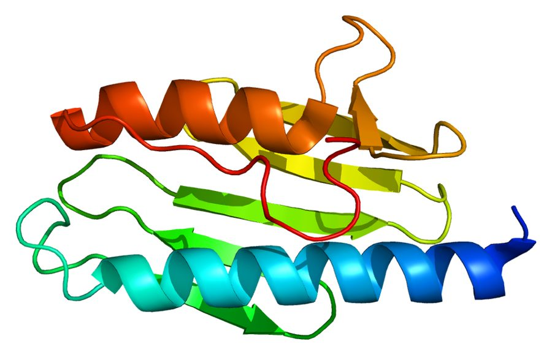

Información divulgativa. No sustituye la valoración de un profesional sanitario ni el consejo genético.
En pocas palabras
| Gen | FXN, cromosoma 9 |
| Causa | Expansión de la repetición GAA, que apaga el gen |
| Herencia | Autosómica recesiva |
| Frecuencia | 1 de cada 40.000-50.000 personas de origen europeo; 1 de cada 100 es portadora |
| Rasgos principales | Falta de coordinación progresiva, miocardiopatía, escoliosis, diabetes |
| Tratamiento | Omaveloxolona desde 2023; cuidados de soporte |


Qué es
Ataxia significa falta de coordinación de los movimientos. La ataxia de Friedreich la describió el médico alemán Nikolaus Friedreich en 1863, y es la ataxia hereditaria más frecuente en Europa. Suele empezar entre los 5 y los 15 años, con torpeza al caminar, y avanza poco a poco.
Causa: un gen apagado
La proteína frataxina trabaja dentro de las mitocondrias, las centrales de energía de la célula, ayudando a fabricar unos grupos de hierro y azufre necesarios para producir energía. Cuando falta, se acumula hierro en las mitocondrias y las células más exigentes sufren: las neuronas sensitivas, el cerebelo y el corazón.
En el 96 % de los casos, la causa es que las dos copias del gen FXN tienen una expansión de la secuencia GAA: lo normal son menos de 35 repeticiones, y en la enfermedad hay entre 70 y más de 1.000. La repetición está en un intrón, una parte del gen que no codifica proteína, pero forma una estructura que silencia el gen. Es una enfermedad por expansión de repeticiones, como la enfermedad de Huntington o la distrofia miotónica, pero en este caso recesiva. Cuanto más larga es la repetición menor, antes empieza y más grave es.
Los padres son portadores sanos. Cada hijo de dos portadores tiene un 25 % de probabilidad de estar afectado.
Síntomas
- Ataxia de la marcha que se extiende a los brazos; la mayoría necesita silla de ruedas unos 10-20 años después del inicio.
- Pérdida de los reflejos y de la sensibilidad de la posición en las piernas.
- Disartria: habla lenta y arrastrada. Problemas para tragar.
- Miocardiopatía hipertrófica: el músculo del corazón se engrosa. Es la principal causa de muerte.
- Escoliosis, pies cavos y diabetes en alrededor del 10-30 %.
- La inteligencia se conserva.
Un 15 % de los casos empiezan después de los 25 años, con formas más leves y lentas.
Tratamiento
En 2023, Estados Unidos aprobó la omaveloxolona, y la Unión Europea en 2024, para mayores de 16 años. Activa una vía de defensa celular frente al estrés oxidativo llamada Nrf2. En el ensayo clínico ralentizó la progresión de la enfermedad, aunque no la detiene. Es el primer fármaco específico.
El resto del tratamiento es de soporte: fisioterapia, logopedia, seguimiento cardiológico con electrocardiograma y ecocardiograma, control de la diabetes y cirugía de la escoliosis. Hay en ensayo varias terapias génicas para llevar una copia sana de FXN al corazón y al sistema nervioso, y fármacos que intentan reactivar el gen.
Diagnóstico
Una prueba genética específica mide el tamaño de la repetición GAA en las dos copias de FXN. Si solo hay una expansión, se secuencia el gen en busca de otra variante. Los hermanos de una persona afectada pueden hacerse la prueba tras consejo genético.
Dónde informarse
- Federación de Ataxias de España (FEDAES)
- Friedreich's Ataxia Research Alliance (en inglés)
- Orphanet: ataxia de Friedreich
Ver también: Enfermedad de Huntington, Miocardiopatía hipertrófica y QT largo y Qué es ser portador.
Fuentes
- Campuzano V, Montermini L, Moltò MD, et al. Friedreich's ataxia: autosomal recessive disease caused by an intronic GAA triplet repeat expansion. Science. 1996;271(5254):1423-1427. doi:10.1126/science.271.5254.1423
- Lynch DR, Chin MP, Delatycki MB, et al. Safety and efficacy of omaveloxolone in Friedreich ataxia (MOXIe study). Ann Neurol. 2021;89(2):212-225. doi:10.1002/ana.25934
- Cook A, Giunti P. Friedreich's ataxia: clinical features, pathogenesis and management. Br Med Bull. 2017;124(1):19-30. doi:10.1093/bmb/ldx034